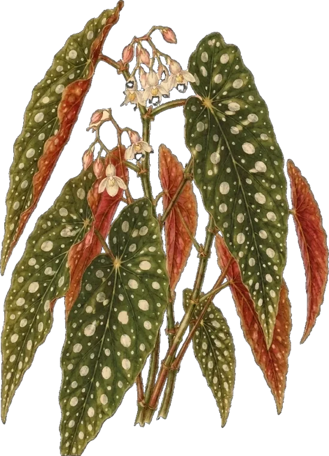
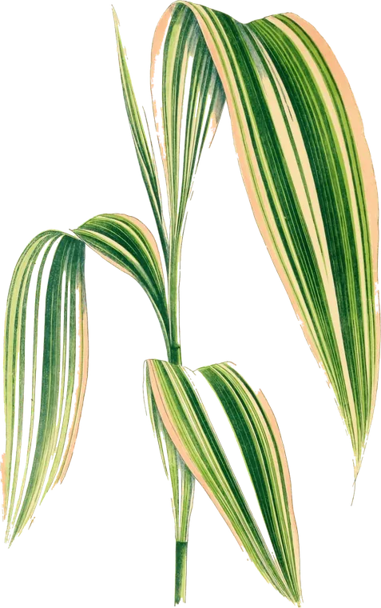
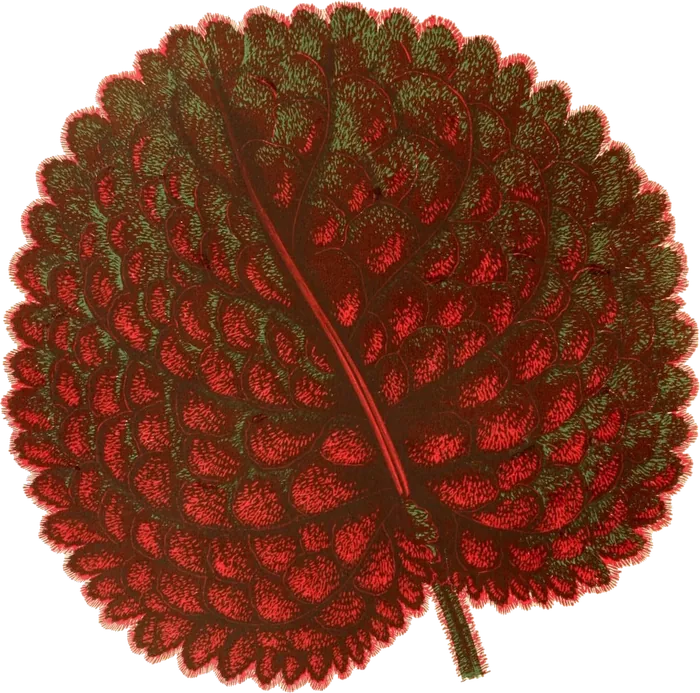
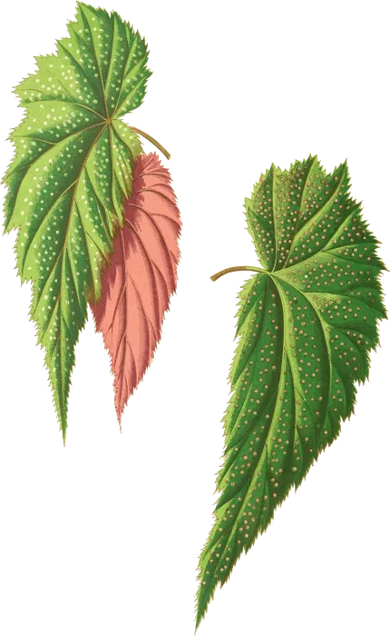
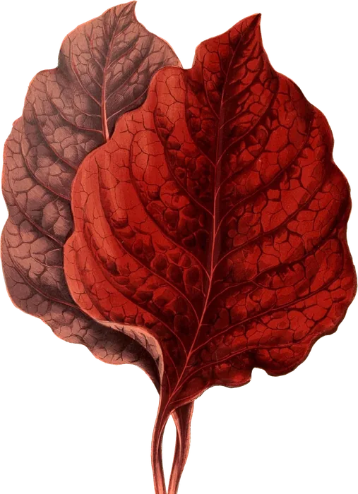
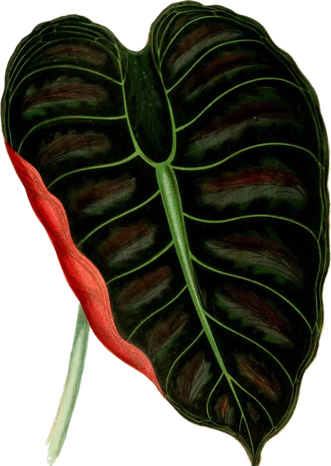
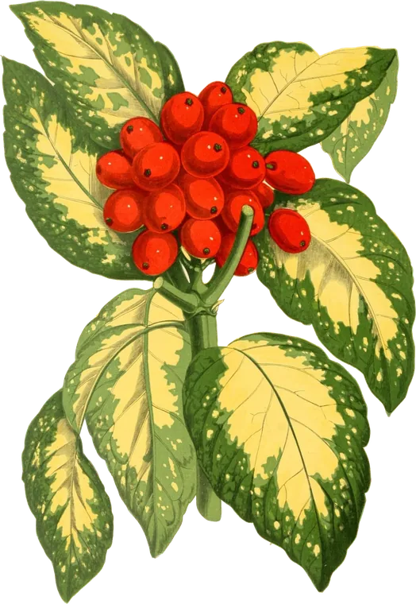

Stan rośliny w mgnieniu oka
Kolorowy znaczek przy każdej roślinie mówi, czy jest szczęśliwa, czy czegoś jej trzeba. Wystarczy kilka sekund.
Aplikacja do opieki nad roślinami
KwiatAppka pomaga dbać o rośliny tak, jak naprawdę stoją w Twoim domu: pokój po pokoju, parapet po parapecie. Jedno spojrzenie i wiesz, którą trzeba podlać.
Dostępna na telefony z Androidem.






Wszystko na swoim miejscu
Od razu widzisz, ile roślin jest w każdym pokoju. Jedno dotknięcie i jesteś przy swoich doniczkach.
Co potrafi KwiatAppka
KwiatAppka pamięta o podlewaniu za Ciebie i podpowiada, jak dbać o każdą roślinę.
Kolorowy znaczek przy każdej roślinie mówi, czy jest szczęśliwa, czy czegoś jej trzeba. Wystarczy kilka sekund.
Nie pamiętasz nazwy? Zrób zdjęcie, a KwiatAppka podpowie, jaki to gatunek.
O podlewaniu, nawożeniu i przesadzaniu. Ustawisz je dla całego domu, jednego pokoju albo jednej rośliny. Możesz też dodać własne.
Zapisuj notatki i zdjęcia. Zobaczysz, jak Twoja roślina zmienia się z czasem.
Podręczna wiedza o gatunkach i ich potrzebach, zawsze pod ręką.
Każda roślina ma swój rytm. KwiatAppka pilnuje go za Ciebie.

Stan roślin
Cztery proste znaczki. Nie musisz liczyć dni od ostatniego podlewania.
Niczego jej nie brakuje. Możesz po prostu się nią cieszyć.
Pora sięgnąć po konewkę.
Ma za mało albo za dużo światła. Przestaw ją tam, gdzie będzie jej lepiej.
Coś jej dolega. Zajrzyj do niej jak najszybciej.
Pobierz aplikację z Google Play i urządź swój pierwszy pokój.
Pobierz z Google Play